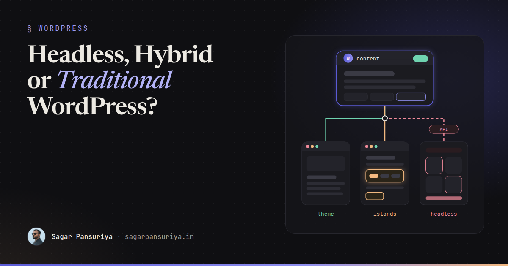
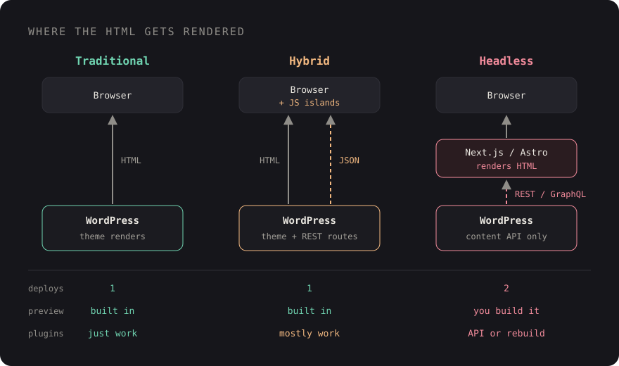

Headless vs Hybrid vs Traditional WordPress: Choosing the Right Architecture


You've probably sat in this meeting. A new marketing site is on the table, someone says "let's go headless, it's faster and more modern", and everyone nods. Six months later the content team can't preview a draft, the contact form is a custom API route nobody wants to own, and a plugin update means redeploying two separate apps.
Headless WordPress is a real, useful architecture. It's also the most expensive one you can pick, and it's often picked for the wrong reasons. Having weighed classic themes, Sage, and decoupled frontends against each other many times, my default answer has become boring: start traditional, add islands of interactivity where you need them, and go headless only when a specific requirement forces you to.
This post lays out the three options honestly, what headless actually costs, the hybrid patterns that cover most "we need it to feel like an app" requests, and a decision table you can use in your next scoping call.
The three architectures in one paragraph each
Traditional. WordPress renders the HTML. You use a block theme, a classic PHP theme, or a structured setup like Sage on Bedrock with Blade templates and a Vite build. One server, one deployment, and every plugin works the way its author intended.
Hybrid. WordPress still renders the pages, but specific parts of them are interactive islands: an Alpine.js filter, a small React or Vue widget mounted on one element, a block using the Interactivity API, or a component fetching data from a custom REST endpoint. Still one deployment, still server-rendered HTML for SEO, but app-like where it matters.
Headless. WordPress becomes a content API only. A separate frontend, usually Next.js or Astro, fetches content over the REST API or WPGraphQL and renders it. Two codebases, two hosts, two deployment pipelines, and a contract between them.

What headless actually costs
The pitch for headless is usually performance and developer experience. Both are real, but a well-built traditional theme behind a page cache is also fast, and the hidden costs of decoupling show up after launch. These are the ones I'd put in any estimate.
1. Previews
In a traditional site, the Preview button just works. In a headless one, you have to build
it: WordPress needs to send the editor to your frontend with a token, the frontend needs a
preview mode that bypasses its cache, and it needs to fetch the draft revision with
authentication. Next.js has draftMode() for this and WPGraphQL can return
previews for authenticated requests, but wiring the auth, the redirect and the edge cases
(unsaved changes, scheduled posts, custom post types) is real work. Content teams notice
immediately when it's flaky.
2. Forms
Form plugins render their own markup, validation and spam protection on the WordPress side. Headless, you rebuild the form in your frontend and either post to the plugin's API (if it has a usable one) or write your own endpoint. Multiply that by conditional logic, file uploads and CAPTCHA.
3. Plugins that touch the frontend
A large part of the WordPress ecosystem's value is plugins that output HTML: SEO meta, schema markup, cookie banners, galleries, events calendars, WooCommerce templates, page builders. In a headless build, every one of those becomes "does it expose its data through the API, and who renders it now?" Some do, via REST fields or WPGraphQL extensions. Many don't. Each gap is custom code.
4. SEO plumbing
You now own titles, canonical URLs, meta descriptions, Open Graph tags, XML sitemaps, redirects, robots rules and structured data on the frontend. An SEO plugin can still manage the data, but you have to fetch it and output it correctly on every route.
5. Two deployments and cache invalidation
When an editor hits Update, the frontend has to find out. With static generation or
incremental regeneration that means a webhook from WordPress to your frontend on
save_post, and code that works out which pages to revalidate: the post, its
archive, the home page, related posts, menus. Get it wrong and editors learn to ask "why
isn't my change live?"
// wp-content/mu-plugins/revalidate.php
add_action('save_post', function (int $postId, WP_Post $post) {
if (wp_is_post_revision($postId) || $post->post_status !== 'publish') {
return;
}
wp_remote_post(FRONTEND_URL . '/api/revalidate', [
'headers' => ['Authorization' => 'Bearer ' . REVALIDATE_SECRET],
'body' => ['type' => $post->post_type, 'slug' => $post->post_name],
'blocking' => false,
]);
}, 10, 2);That's the easy half. The frontend route still has to verify the secret and decide which paths or tags to revalidate. None of it is hard on its own; the cost is that it's one more thing that can silently break.
6. The team you need
A headless project needs people comfortable in PHP and in a JavaScript framework, and hosting for both. That's fine for a product team. It's a real constraint for an agency handing a site over to a client whose in-house developer knows WordPress.
When traditional (or Sage) is enough
For most marketing sites, blogs, brochure sites and content-heavy publications, server-rendered WordPress is the right answer. Modern WordPress is not the WordPress of 2012: the block editor gives editors structured, reusable layouts, and a setup like Roots Sage + Bedrock gives developers Composer-managed dependencies, environment config, Blade components and a Vite pipeline with Tailwind.
Performance comes from the usual places: a full-page cache or CDN in front, optimised images, minimal JavaScript, and not loading every plugin's assets on every page. A traditional site that ships 20 KB of JavaScript will usually beat a headless site that hydrates a large React tree, especially on slower phones.
Hybrid patterns that cover most "app-like" needs
When someone asks for headless, the underlying request is often narrower: "the product filter should update without a page reload", or "the dashboard area needs to feel like an app". You can do that without decoupling the whole site.
Islands with Alpine.js
For filters, tabs, accordions, modals and small stateful UI, Alpine on top of Blade markup is hard to beat. The HTML is server-rendered and indexable; Alpine adds behaviour.
REST-powered widgets
For data that changes per user or per request, register a small endpoint and fetch it from an island. The page stays cacheable; only the widget is dynamic.
// app/rest.php (Sage) or a small plugin
add_action('rest_api_init', function () {
register_rest_route('site/v1', '/events', [
'methods' => 'GET',
'permission_callback' => '__return_true',
'callback' => function (WP_REST_Request $request) {
$events = get_posts([
'post_type' => 'event',
'posts_per_page' => 6,
'meta_key' => 'event_date',
'orderby' => 'meta_value',
'order' => 'ASC',
]);
return array_map(fn ($e) => [
'title' => get_the_title($e),
'url' => get_permalink($e),
'date' => get_post_meta($e->ID, 'event_date', true),
], $events);
},
]);
});<div x-data="{ events: [] }"
x-init="events = await (await fetch('/wp-json/site/v1/events')).json()">
<template x-for="event in events" :key="event.url">
<a :href="event.url" x-text="event.title"></a>
</template>
</div>Framework components mounted on one element
If a feature genuinely needs React (a complex configurator, a map-heavy search), bundle it with Vite and mount it on a single container in the Blade template. You get the framework where it earns its weight and keep WordPress rendering everything else.
The Interactivity API
For block-based themes, WordPress core ships the Interactivity API (since 6.5), a standard way to add client-side behaviour to blocks with directives in server-rendered markup. If your editors build pages from blocks, it's worth evaluating before reaching for a separate framework.
When headless is worth it
Headless earns its cost when at least one of these is true:
- Multiple consumers. The same content feeds a website, a mobile app, and maybe in-store screens. An API-first CMS is the point.
- The frontend is an application. Heavy client-side state, authenticated dashboards, real-time features, where WordPress content is a small part of the product.
- WordPress is one source among several. The page merges CMS content with a commerce platform, a search service and a product database.
- A dedicated JS team owns the frontend long-term, and the budget covers previews, forms and SEO plumbing properly.
If you do go headless, choose the data layer deliberately. The REST API is built in and works with any HTTP client. WPGraphQL is a plugin that lets the frontend ask for exactly the fields it needs in one query, which suits component-driven frontends well. And consider Astro for content-heavy sites: it renders to static HTML by default and only ships JavaScript for the islands you mark, which avoids the hydration cost of a full React app.
A decision table
These are the patterns I see repeat across projects. Treat them as starting points, not rules.
| Project | Recommendation | Why |
|---|---|---|
| Marketing or brochure site | Traditional (Sage or block theme) | Previews, forms and SEO plugins just work |
| Blog or publication | Traditional + page cache | Content-heavy, editor-driven, cache-friendly |
| Site with a few interactive tools | Hybrid (Alpine or mounted widgets) | App-like where needed, one deployment |
| WooCommerce store | Traditional or hybrid | Checkout, payments and extensions expect WP templates |
| Web + mobile app from one CMS | Headless | Content is consumed by more than one client |
| Product where CMS is a small part | Headless | The frontend is an app with its own team |
Questions to ask before you decide
- Who will maintain this in two years, and what do they know?
- Which plugins output frontend HTML today, and does each have an API?
- How important is one-click preview to the content team?
- Is there more than one consumer of the content, now or on the roadmap?
- Could the "app-like" parts be islands on a server-rendered page?
- Is there budget for two deployments, cache invalidation and SEO plumbing?
If most answers point to "one team, one website, editors who live in WordPress", build it traditionally and spend the saved budget on performance and content design. Headless is a good tool. It just shouldn't be the default.
Discussion